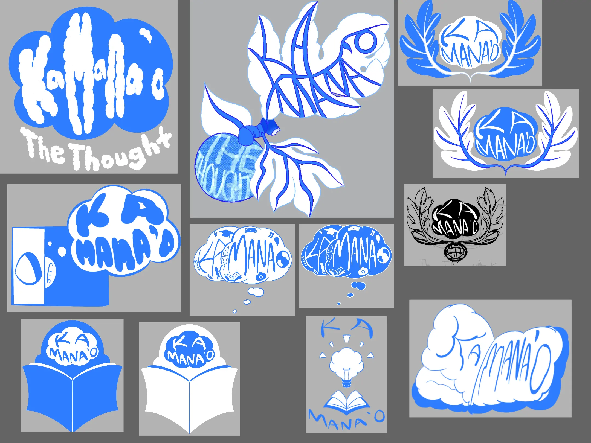
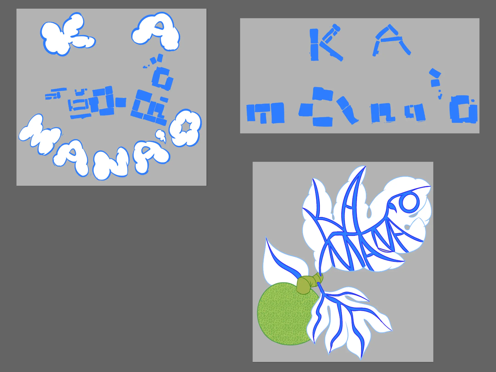
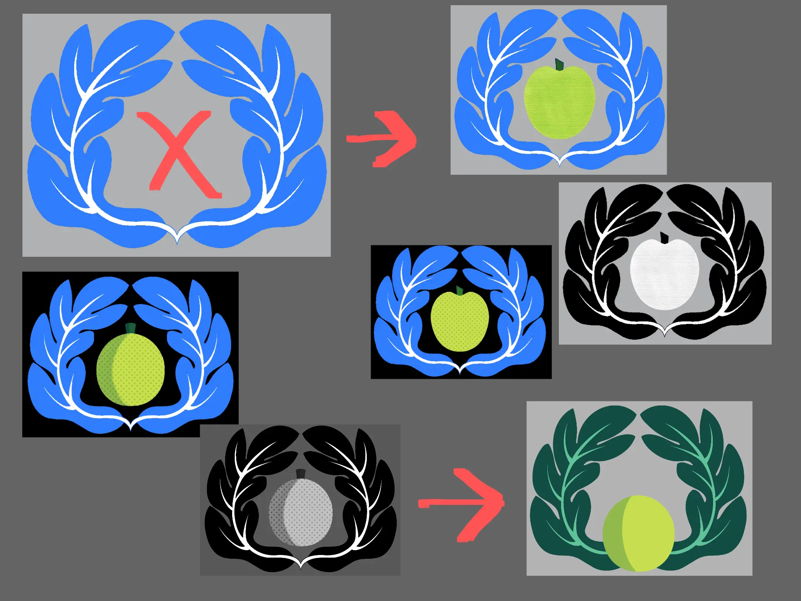
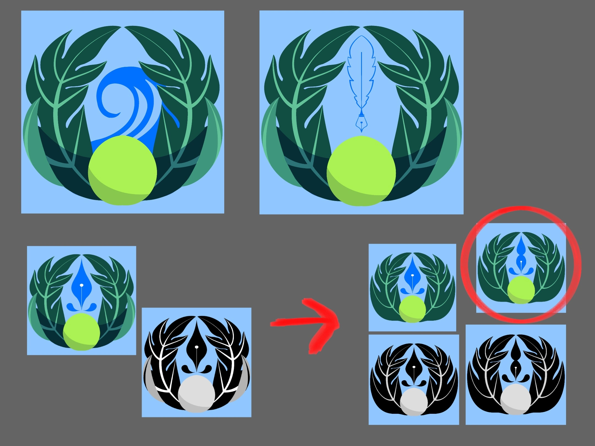
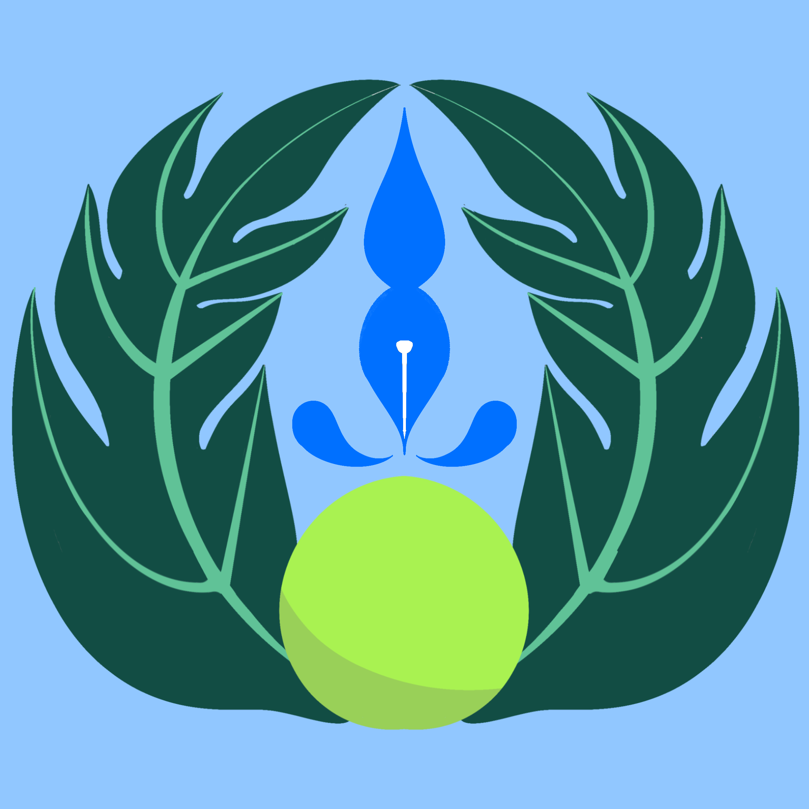

Overview
What is Ka Manaʻo?
Ka Manaʻo (“The Thought” in ʻōlelo Hawaiʻi) is a student publication based at Leeward Community College in Pearl City, Hawaiʻi. Like many student-led publications, Ka Manaʻo relies heavily on student leadership to create editorial content that reflects the perspectives of its staff while maintaining an unbiased approach to journalism.
Ka Manaʻo produces both print and digital content to inform students about events at Leeward Community College, throughout the University of Hawaiʻi (UH) system, and across Hawaiʻi and beyond. The publication also provides guidance on navigating community college life and academics while recognizing students’ creative work through a semiannual Creative Arts & Writing Contest.
Objective

Before the redesign, Ka Manaʻo’s previous logo relied heavily on typography. Based on feedback from my colleagues, my primary objective was to rebrand Ka Manaʻo with a stronger visual emblem that would distinguish it from other University of Hawaiʻi student publications while remaining aligned with the publication’s goals and values. This objective guided my exploration of Ka Manaʻo’s identity and helped me determine how its values could be translated into a distinctive and cohesive visual design.
Project Process
Research
I began by reviewing Ka Manaʻo’s social media, primarily Instagram, as well as its official website. I also participated in a Jamboard brainstorming session with the team to discuss the publication’s identity and gather feedback.
Through this research, I learned that Ka Manaʻo strives to highlight a variety of perspectives; from its staff creating editorial content to LCC students submitting creative work to the publication’s semesterly Creative Arts & Writing Contest. The publication also incorporates perspectives from instructors, guest interviewees, and other members of the community.
In addition to student-centered content, Ka Manaʻo informs students about local news, University of Hawaiʻi system events, and topics relevant to Hawaiʻi.
Sketching

When I first began conceptualizing the redesign, I explored the literal meaning of “Ka Manaʻo” through visual metaphors such as thought bubbles, lightbulbs, and the mind to represent ideas, thinking, and creativity. I also explored symbols associated with the publication, including magazines and physical books.
Because Leeward Community College’s primary colors are blue and white, I initially incorporated them into my concepts. One of my colleagues also suggested incorporating the ʻulu (breadfruit), which is closely associated with Student Life, the program that helped establish Ka Manaʻo, and is also grown within the LCC campuses. I felt these elements could help connect the identity to the publication’s campus environment. All initial sketches were created in Procreate.

As this was my first major design task, I initially prioritized creating a highly distinctive visual identity over simplicity. This became one of the project's biggest learning points for me. While the team responded positively to several of my concepts, they felt that many were too abstract or visually complex for a logo, particularly for people unfamiliar with Ka Manaʻo. My colleagues also noted how the color palette was heavily limited to blue and white.
Based on their feedback, they suggested making the ʻulu green to better reflect the real-life fruit and exploring design elements inspired by the campus layout and architecture. I attempted a campus-layout concept, but it did not translate effectively visually. As a result, the team preferred a revised version of the ʻulu concept.

We reviewed my earlier drafts and decided to simplify the ʻulu concept by removing the bubble text between the leaves and refining the shape of the fruit. I experimented with halftone textures, but ultimately removed them to maintain a cleaner visual appearance. The ʻulu was then reshaped into a circle and repositioned between the leaves to improve balance and more accurately represent the fruit.

With feedback from my colleagues and additional outside perspectives, I incorporated a symbol above the ʻulu to represent the publication’s focus on writing. The symbol took the form of a fountain pen created using water droplets, while other variations include a quill, and water imagery such as waves.
I chose water imagery as a nod to the lagoon harbor near Pearl City and used LCC’s primary colors to connect the design to the publication’s home campus.I also adjusted the shapes and colors of the leaves to make them more recognizable and visually dynamic while encouraging students and outside audiences to pay greater attention to the water symbol and the ʻulu itself.
After developing multiple variations, my team selected the two-drop pen design because of its clarity and cohesion.

Finalizing
Once the draft was approved, I informed my colleagues that I would recreate the logo in Adobe Illustrator for higher quality, as vector illustrations provide better resolution and scalability.
The most challenging part was replicating the ʻulu’s shading while keeping the shapes clean and contained. Using the Pen Tool and Direct Selection Tool, I refined the outlines, shading, and leaf structure until the final design was complete.
Results
After completion, the new Ka Manaʻo emblem was widely used across the publication’s official social media accounts and printed magazines. I was later asked to create additional versions of the logo for side projects, including an alternative version for staff uniforms.
This project taught me the importance of simplicity, visual identity, and intentional use of shape and color. It significantly influenced my design approach moving forward, particularly my understanding of how collaboration and feedback can strengthen a branding project.